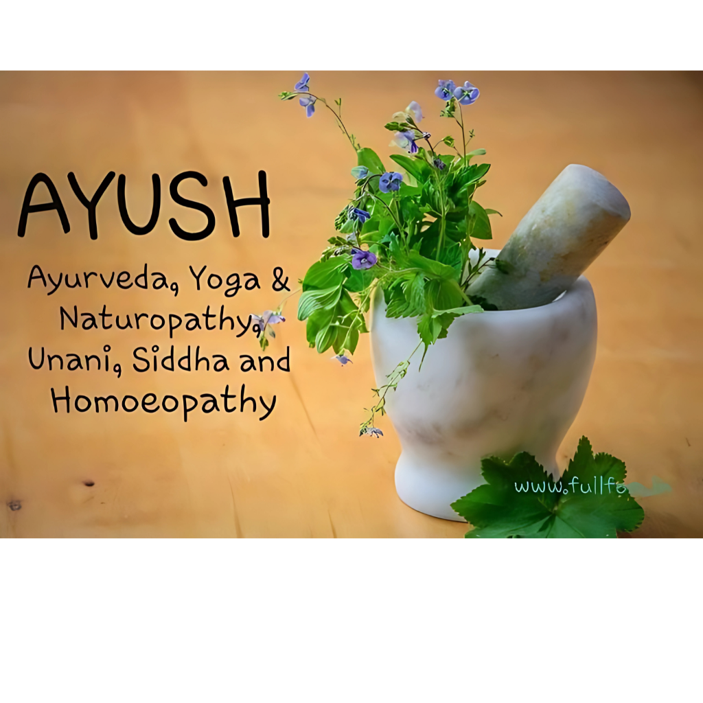

AYUSH (Ayurveda, Yoga & Naturopathy, Unani, Siddha, and Homeopathy) is an initiative of the Government of India that promotes holistic health and well-being through traditional systems of medicine. It emphasizes natural remedies, preventive care, and a balance of mind, body, and spirit. Ayurveda provides herbal treatments and lifestyle guidance, Yoga and Naturopathy focus on physical and mental wellness, Unani and Siddha offer age-old healing practices, while Homeopathy stimulates the body’s natural healing power. AYUSH not only preserves India’s rich medical heritage but also contributes to modern healthcare by offering safe, natural, and effective approaches to strengthen immunity and improve overall quality of life .